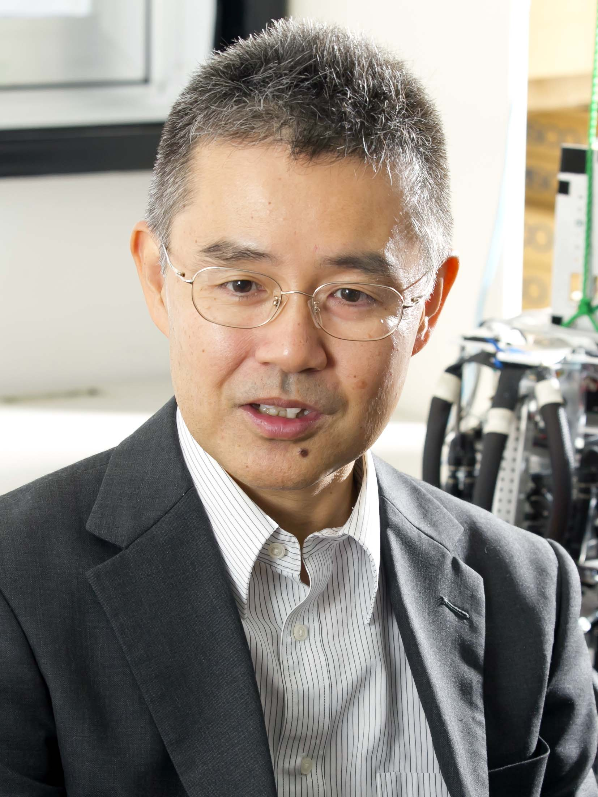

Advanced Robotics編集委員長備忘録
2017年4月から2022年3月まで，（社）日本ロボット学会の欧文誌であるAdvanced Robotics誌の編集委員長（Editor-in-chief）を務めました．
インパクトファクタの推移
2013 0.562
2014 0.572
2015 0.516（就任したのは2017年4月だったので，その時点でのIF）
2016 0.920（就任した2017年夏に来たIF．ここまでは新井前編集委員長の結果）
2017 0.961, 22/26
2018 1.104
2019 1.247
2020 1.699
2021 2.057
2016年10月 前編集委員長からの打診
IROS2016（韓国）参加中に，新井前編集委員長から次期編集長推薦の打診を受け，一旦は保留したが2日後に承諾
2017年4月 編集長就任
2月にアドバイザリ委員会に承認され，編集長に就任，4月から編集を始める．この時点では，IF=0.516
当初は，右も左もわからなかったので，とりあえずAE・SEも全員留任いただいて，淡々と入ってくる論文を振り分けていたのだが， びっくりしたのは，投稿されてくる一般論文の質が悪いこと，parallel manipulator，SLAM，水中ロボットなど， state of the artから少し外れる（SLAMはピークを過ぎていた感）投稿が多いこと，その結果特定のAEと査読者が疲れていたこと． そして，5年以上の長期にわたってAEをお願いしている先生が一定数いたこと.
最初のうちは，内容を丁寧に読んで，AEに振り分ける（あまりリジェクトしない）ことを繰り返していたが，5月10日早くも泣き言を言い始める． 6月5日には，渡辺さんに「稿論文でSEが決まらぬままの論文がだいぶたまってきました。 掲載論文が少しでもほしいときに論文が動いていないと、状況がますます厳しくなります。 お忙しいところ申し訳ないのですが、査読にまわせそうな論文だけでもよいので、なるべく早く論文が回るようにしていただけないでしょうか。」 とお叱りを受けるなど． ビジョン，学習の読み手が少ないので，鏡先生，谷口先生にお願いしてAEに加わっていただく．
Copyright © Koh Hosoda